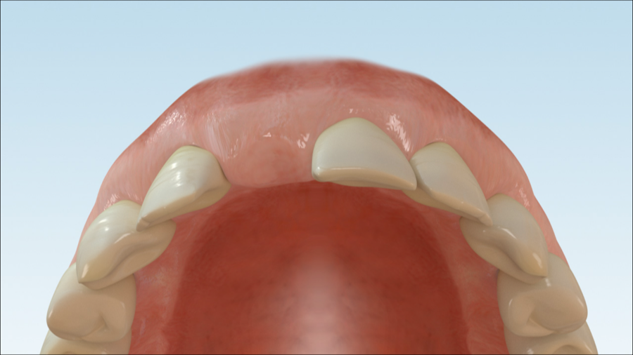
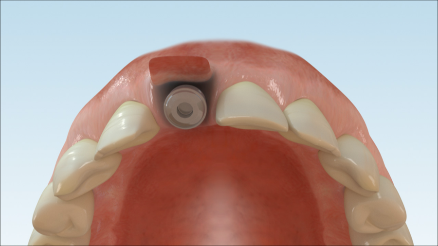
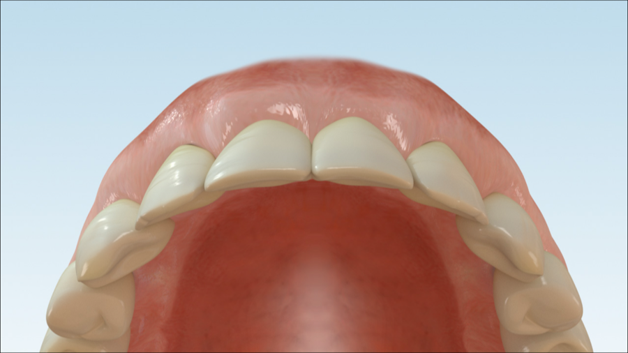

MKG im Carree
Image sequence · implant uncovering
Uncovering · soft tissue shaping
Principle of implant uncovering: the implant initially heals underneath the gum. It is then made accessible, and the gum can shape around the future emergence profile for the prosthetic restoration.


